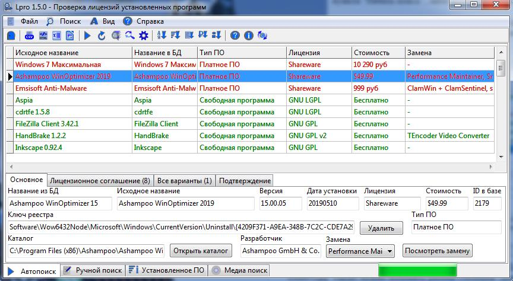
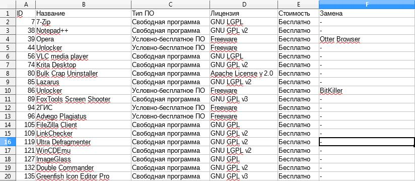
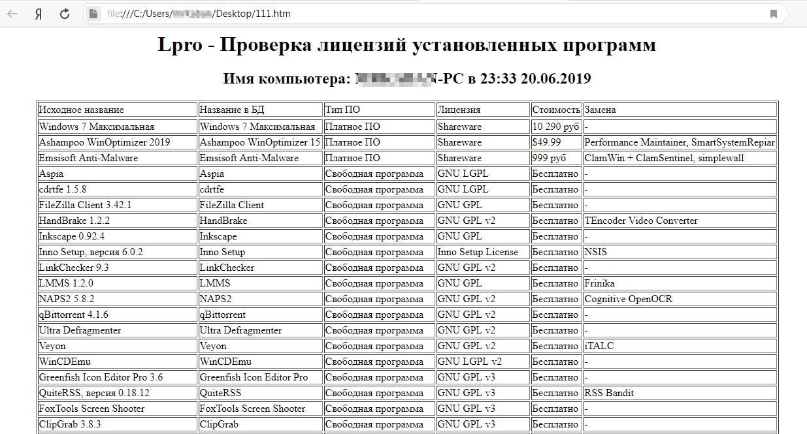

Автоматический поиск
При запуске программы в главном окне имеется кнопка "Начать поиск",
которая и запускает автоматический поиск. Также его можно запустить при
помощи вкладки "Поиск", и пункта "Начать поиск", либо воспользоваться
кнопкой , которая находится на панели инструментов.
После нажатия кнопки "Начать поиск", программа получает список
установленных программ из реестра, фильтрует полученные названия от
лишней информации (версия и т.п.) и осуществляет поиск в базе
данных. Найденные совпадения отображаются в таблице. При выделении
строки отображается подробная информация о ней (Освновное, Лицензионное
соглашение, Все варианты, Подтверждение).

Вкладка "Подтверждение" отображает исполняемый файл программы (если он был найден), что позволяет удостовериться, что она определена корректно.
Столбцы таблицы можно менять местами. Для этого необходимо навести
курсор на заголовок столбца, зажать левую кнопку мыши и повести влево,
или вправо.
Содержимое таблицы можно сортировать не только при помощи меню "Вид", но и при помощи нажатия левой кнопкой мыши по заголовку колонки.
Также можно изменять размер столбцов. Для этого необходимо навести
курсор на правую или левую границу столбца в строке с заголовком, как
только курсор изменится, можно тянуть влево, или вправо.
Список установленного программного обеспечения в самой программе не сохраняется.
Вкладка "Освновное" показывают информацию о выделенной программе на
основании данных из реестра о ней. Кнопка "Открыть каталог" открывает
указанный в реестре каталог при помощи Проводника Windows, но данный
ключ в реестре не всегда заполняется разработчиками, поэтому
соответствующее поле может быть пустым. Кнопка "Посмотреть замену"
работает во взаимодействии с выпадающим списком слева от кнопки. В этом
списке нужно выбрать пункт и нажать кнопку, тогда откроется браузер с
страницей поиска по сайту КонтинентСвободы.рф (замены берутся именно от
туда).
Вкладка "Лицензионное соглашение" показывает лицензионные соглашения,
которые были найдены в каталоге с программой. Стоит отметить, что при
отсутствии данных о каталоге в реестре, будут отсутствовать данные и об
лицензионном соглашении. По умолчанию открывается первый из найденных
вариантов. Посмотреть все можно открыть выпадающий список.
Вкладка "Все варианты" призвана показать все возможные варианты совпадений с базой. Может помочь при некорректном определении.
Экспорт найденных совпадений
В данный момент поддерживается:
экспорт в CSV;
экспорт в HTML;
передача в LibreOffice Calc;
передача в Microsoft Excel.
Экспорт в CSV
Для осуществления экспорта найденных совпадений автоматического поиска
в CSV необходимо открыть вкладку "Файл", и выбрать пункт "Экспорт в
CSV", либо при помощи кнопки на панели инструментов.
Данный формат представляет собой электронную таблицу, и его можно
открыть при помощи такого табличного процессора как LibreOffice Calc
(он открывает наиболее корректно). Также можно открыть современными
версиями Microsoft Excel.

Экспорт в HTML
Экспортированный отчет в формате HTML сегодня можно открыть практически
на любом компьютере. Для осуществления экспорта необходимо зайти во
вкладку "Файл", и далее выбрать пункт "Экспорт в HTML", либо
воспользоваться кнопкой .
Данный формат открывается при помощи браузера (Mozilla Firefox, Google
Chrome, Opera, Internet Explorer и др.). Теги используются самый
простые, поэтому файл должен корректно отображаться во всех браузерах.

Передача в Microsoft Excel
Существует возможность передать содержимое таблицы в MS Excel без
сохранения файла. Для осуществления данной функциональной возможности
необходимо открыть вкладку "Файл", и выбрать пункт " Передача в Excel",
либо воспользоваться кнопкой .
Передача в LibreOffice Calc
Существует возможность передать содержимое таблицы в LibreOffice Calc без
сохранения файла.Для осуществления данной функциональной возможности
необходимо открыть вкладку "Файл", и выбрать пункт "Передача в LibreOffice",
либо воспользоваться кнопкой .
Сортировка результатов автоматического поиска
Данные в таблице можно сортировать следующими способами:
- по названию - кнопка (Вкладка "Вид", далее пункт "Сортировать по названию");
- по типу - кнопка (Вкладка "Вид", далее пункт "Сортировать по типу");
- по лицензии - кнопка (Вкладка "Вид", далее пункт "Сортировать по лицензии");
- по стоимости - кнопка (Вкладка "Вид", далее пункт "Сортировать по стоимости");
- по замене - кнопка (Вкладка "Вид", далее пункт "Сортировать по замене").